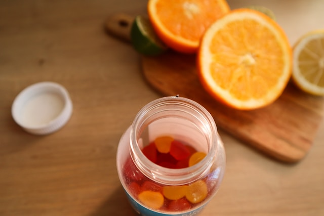

Sağlık Kütüphanesi
Anasayfa
Doktorlarımız
Sağlık Kütüphanesi
İletişim
Hakkımızda

Pektin Nedir ?
Pektin, ısıyla karşılaştığı durumda şeker ve kalsiyum ile birleşirse jelleşmeye başlar.
Bu sebeple içeriğinde pektin oranı düşük olan çilek ve ahududu gibi meyvelerin
jölesini ya da reçelini oluşturmak için pektinden yararlanılır.
Pektin olmadan bu meyvelerin koyulaşması için aşırı miktarda şeker gerekir.